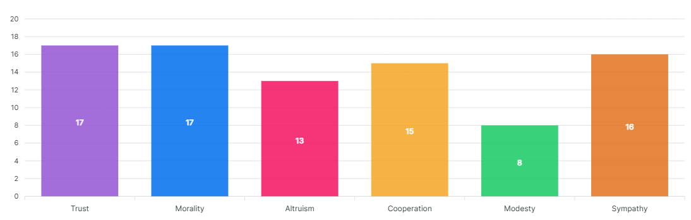

Agreeableness reflects individual differences in concern with cooperation and social harmony. Agreeable individuals value getting along with others.
They are therefore considerate, friendly, generous, helpful, and willing to compromise their interests with others'. Agreeable people also have an optimistic view of human nature. They believe people are basically honest, decent, and trustworthy.
Disagreeable individuals place self-interest above getting along with others. They are generally unconcerned with others' well-being, and therefore are unlikely to extend themselves for other people. Sometimes their skepticism about others' motives causes them to be suspicious, unfriendly, and uncooperative.
Agreeableness is obviously advantageous for attaining and maintaining popularity. Agreeable people are better liked than disagreeable people. On the other hand, agreeableness is not useful in situations that require tough or absolute objective decisions. Disagreeable people can make excellent scientists, critics, or soldiers.
Your high level of Agreeableness indicates a strong interest in others' needs and well-being. You are pleasant, sympathetic, and cooperative.
